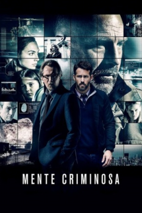

Mente Criminosa (2016)


A última esperança da CIA está em uma...

Avaliação (TMDb):


6.1/10 (1.3K votos)
Avaliação (Usuário):
Outro Título:Criminal
País:United Kingdom, 113 minutos
Idiomas falados:Inglês, Português
Gênero(s):Ação, Crime, Sci-Fi
Diretor(s):Ariel Vromen
Codec:MPEG-2 (DVD)
Número: 2748
Sinopse:
Os segredos, memórias e habilidades de um agente da CIA morto são implantados em um prisioneiro imprevisível e perigoso com a intenção de ajudá-lo a interromper uma trama diabólica.
Elenco:
Kevin Costner, Gary Oldman, Tommy Lee Jones, Alice Eve, Gal Gadot, Michael Pitt, Jordi Mollà, Antje Traue, Scott Adkins, Amaury Nolasco
Tipo de mídia: DVD5,
Legendas: Português
Alugado: Não
Tela: 2.35:1